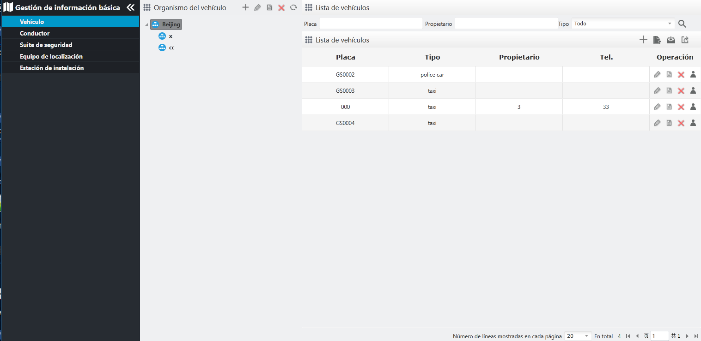

| 1. | Haga clic en en la barra de menú de navegación izquierda para ingresar a la interfaz “vehículo”. La interfaz principal del vehículo consiste en un árbol de organismo y una lista de vehículos.
|
| 2. | Seleccione una organización en la lista de organismos, y la información del vehículo en la lista de organismo se muestra en
la lista de vehículos.

Fig 66 Visualización de la lista de vehículos |